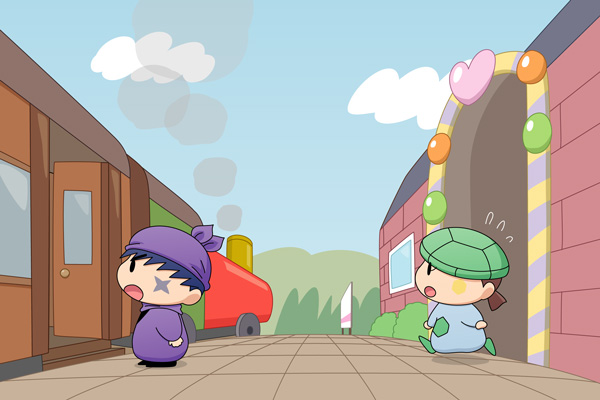

カメリ「きっぷは～無くさない～ように～しないといけないね～」
サスケ「オイラ汽車は初めてだけど、き…キンチョーはしてないぜ」
カメリ「さすがだね～、サスケくん。
わたしは～いつもドキドキしちゃうんだ」
次の日、サスケとカメリは駅で待ち合わせて、一緒に汽車に乗ることになりました。汽車に乗るのが初めてのサスケは、早くも緊張しています。

ポォーーー・・・
二人が話していると、遠くから汽笛の音が聞こえてきました。
汽車は煙を上げながら、ゆっくりと駅に入ってきました。
サスケ「あっ、汽車が来たみたいだぜ。
乗り遅れないようにオイラたちも早く！」
カメリ「あ、サスケくん、待ってよ～」
サスケ「ここから乗ればいいのかだぜ？」
二人が客車に乗ると、汽車はゆっくりと発車していきました。
いよいよ二人の旅が始まります！ 無事に汽車に乗り込むことが出来た二人は、果たしてこの先も順調に旅を続けられるのでしょうか？ ほどほどのご期待で暖かく二人を見守ってあげてください～。
それにしても乗り物を描くのは苦労します。駅も全然駅っぽく見えないですし。いっそのこと、もっと妖精界っぽくすればよかったかなぁ。
(2012/1/7)